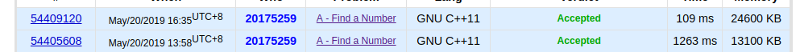

这套题目难度适中吧，只不过我们队还没做到自己的最好，自闭了好几个小时的题目竟然是水题
题目pdf链接
codeforce提交链接
概览：
A. Find a Number
题目大意： 给你一个d(1<=d<=500),和s(1<=s<=5000)，找到一个最小的整数n使得n是d的倍数并且各数位之和为s，不存在就输出-1。
这个题自闭了四个小时还没做出来，其实就是一个简单的bfs！！
思路：记 dp[x][y] 为余数为x，各数位之和为y的数的最小值，因为数位太大，所以可以用一个string保存。10+k)%d][y+k]=dp[x][y]+string(k) (0<=k<=9) //其中＋为字符串的连接操作。 从小到大**的。题目链接：Enigma ）。
ac代码：
1 2 3 4 5 6 7 8 9 10 11 12 13 14 15 16 17 18 19 20 21 22 23 24 25 26 27 28 29 30 31 32 33 34 35 36 37 38 39 40 41 42 43 44 45 46 47 48 #include <iostream> #include <cstdio> #include <algorithm> #include <string> #include <queue> using namespace std ;int d,S;bool vis[501 ][5001 ];struct T { int x,y; string s; T(int xx,int yy,string ss):x(xx),y(yy),s(ss){} }; queue <T>q;int solve () while (!q.empty())q.pop(); for (int i=1 ;i<10 ;++i){ q.emplace(i%d,i,string (1 ,char (i+'0' ))); vis[i%d][i]=1 ; } while (!q.empty()){ int x=q.front().x; int y=q.front().y; string s=q.front().s; q.pop(); if (x==0 &&y==S){ cout <<s<<endl ; return 0 ; } for (int i=0 ;i<10 ;++i){ if (y+i>S)continue ; int id=(x*10 +i)%d; if (vis[id][y+i]==0 ){ vis[id][y+i]=1 ; q.emplace(id,y+i,s+char (i+'0' )); } } } return 1 ; } int main () cin >>d>>S; if (solve())cout <<"-1" <<endl ; return 0 ; }
优化： 上面的代码跑了1200多ms，虽说没有超时，但是还是完全可以优化的。
代码：
1 2 3 4 5 6 7 8 9 10 11 12 13 14 15 16 17 18 19 20 21 22 23 24 25 26 27 28 29 30 31 32 33 34 35 36 37 38 39 40 41 42 43 44 45 46 47 48 49 50 51 52 53 54 55 56 57 58 59 60 61 62 63 64 65 66 67 #include <iostream> #include <cstdio> #include <algorithm> #include <string> #include <queue> using namespace std ;int d,S;bool vis[501 ][5001 ];int lastx[501 ][5001 ],lasty[501 ][5001 ];char ch[501 ][5001 ];struct T { int x,y; T(int xx,int yy):x(xx),y(yy){} }; queue <T>q;void getString (int x,int y) string s="" ; int tmp; while (x!=-1 ){ s=s+ch[x][y]; tmp=lastx[x][y]; y=lasty[x][y]; x=tmp; } reverse(s.begin (),s.end ()); cout <<s<<endl ; } int solve () while (!q.empty())q.pop(); for (int i=1 ;i<10 ;++i){ q.emplace(i%d,i); vis[i%d][i]=1 ; lastx[i%d][i]=-1 ; lasty[i%d][i]=-1 ; ch[i%d][i]=i+'0' ; } while (!q.empty()){ int x=q.front().x; int y=q.front().y; q.pop(); if (x==0 &&y==S){ getString(x,y); return 0 ; } for (int i=0 ;i<10 ;++i){ if (y+i>S)continue ; int id=(x*10 +i)%d; if (vis[id][y+i]==0 ){ vis[id][y+i]=1 ; q.emplace(id,y+i); ch[id][y+i]=i+'0' ; lastx[id][y+i]=x; lasty[id][y+i]=y; } } } return 1 ; } int main () cin >>d>>S; if (solve())cout <<"-1" <<endl ; return 0 ; }
两次运行时间对比：(可以发现少了将近1s）
B. Berkomnadzor
(mid) 字典树大模拟，题目大意：给你n个ip地址(也可能是一个划分的子网）都是使用点分十进制表示法，这n个ip有的属于白名单，有的属于黑名单，然后就是让你把黑名单合并，要求在白名单中的不能属于黑名单，不在白名单中的ip也可以进入黑名单，让你合并后的黑名单个数尽量少。（如果某个ip既在黑名单又在白名单，那么就输出-1。
思路：首先写好点分十进制和二进制ip的相互转化函数，字典树里面只包括0,1字符即可，每个节点要维护当前ip地址(或者子网)是否属于黑名单或者白名单，当前节点之后的子网有没有属于白名单的，有没有属于黑名单的即可。检查冲突：如果下面的所有子网地址都属于一个确定的黑(白)名单，那么就可以判断是否与当前正在插入的ip有冲突，如果到达当前ip的子网掩码长度，就可以判断下面的子网中有没有与此冲突。
注意有子网掩码为0的情况，也就是包括所有的ip的情况。
ac代码：
1 2 3 4 5 6 7 8 9 10 11 12 13 14 15 16 17 18 19 20 21 22 23 24 25 26 27 28 29 30 31 32 33 34 35 36 37 38 39 40 41 42 43 44 45 46 47 48 49 50 51 52 53 54 55 56 57 58 59 60 61 62 63 64 65 66 67 68 69 70 71 72 73 74 75 76 77 78 79 80 81 82 83 84 85 86 87 88 89 90 91 92 93 94 95 96 97 98 99 100 101 102 103 104 105 106 107 108 109 110 111 112 113 114 115 116 117 118 119 120 121 122 123 124 125 126 127 128 129 130 131 132 133 134 135 136 137 138 139 140 141 142 143 144 145 146 147 148 149 150 151 152 153 154 155 156 157 158 159 #include <iostream> #include <cstdio> #include <cstring> using namespace std ;char buf[30 ];int ip[100 ],white;int len,subnet_len,ans,black_num=0 ;struct node { node* next[2 ]; bool has_white[2 ]; bool has_black[2 ]; bool all_white; bool all_black; node(){ memset (next,0 ,sizeof (next)); memset (has_white,0 ,sizeof (has_white)); memset (has_black,0 ,sizeof (has_black)); all_white=all_black=0 ; } ~node(){ if (next[0 ])delete next[0 ]; if (next[1 ])delete next[1 ]; } }*root; void get_binary () if (buf[0 ]=='+' )white=1 ; else white=0 ,++black_num; len=strlen (buf); int tot=0 ; subnet_len=32 ; for (int i=1 ;i<len;++i){ int x=0 ; while (i<len&&buf[i]>='0' &&buf[i]<='9' ){ x=x*10 +buf[i]-'0' ; ++i; } if (tot==32 ){ subnet_len=x; break ; } for (int k=0 ;k<8 ;++k){ if ((x>>(7 -k))&1 )ip[tot]=1 ; else ip[tot]=0 ; ++tot; } } } void change_binary () for (int i=0 ;i<4 ;++i){ int x=0 ; for (int j=i*8 ;j<(i+1 )*8 &&j<subnet_len;++j){ x=x|(ip[j]<<(7 -j+i*8 )); } printf ("%d" ,x); if (i==3 ){ if (subnet_len!=32 )printf ("/%d\n" ,subnet_len); else printf ("\n" ); } else printf ("." ); } } bool insert () node* p=root; if (subnet_len==0 ){ if (white){ if (p->has_black[0 ]||p->has_black[1 ]||p->all_black)return false ; p->all_white=1 ; } else { if (p->has_white[0 ]||p->has_white[1 ]||p->all_white)return false ; p->all_black=1 ; } return 1 ; } for (int i=0 ;i<32 ;++i){ if (white)p->has_white[ip[i]]=1 ; else p->has_black[ip[i]]=1 ; if (!p->next[ip[i]])p->next[ip[i]]=new node(); p=p->next[ip[i]]; if (p->all_white){ if (white)break ; return false ; } if (p->all_black){ if (white)return false ; break ; } if (i==subnet_len-1 ){ if (white){ p->all_white=1 ; if (p->has_black[0 ]||p->has_black[1 ])return false ; } else { p->all_black=1 ; if (p->has_white[0 ]||p->has_white[1 ])return false ; } break ; } } return 1 ; } void dfs_num (node* now,int num) if (now->all_white)return ; if (now->all_black|| (!now->has_white[0 ]&&!now->has_white[1 ])){ ++ans; return ; } if (now->next[0 ]){ ip[num]=0 ; dfs_num(now->next[0 ],num+1 ); } if (now->next[1 ]){ ip[num]=1 ; dfs_num(now->next[1 ],num+1 ); } } void dfs (node* now,int num) if (now->all_white)return ; if (now->all_black || (!now->has_white[0 ]&&!now->has_white[1 ])){ subnet_len=num; change_binary(); return ; } if (now->next[0 ]){ ip[num]=0 ; dfs(now->next[0 ],num+1 ); } if (now->next[1 ]){ ip[num]=1 ; dfs(now->next[1 ],num+1 ); } } int main () root=new node(); int n;cin >>n; while (n--){ scanf ("%s" ,buf); get_binary(); if (!insert()){ cout <<"-1" <<endl ; return 0 ; } } if (black_num==0 ){ cout <<"-1" <<endl ; return 0 ; } ans=0 ; dfs_num(root,0 ); cout <<ans<<endl ; dfs(root,0 ); delete root; return 0 ; }
C. Cloud Computing
pending
D. Garbage Disposal
签到题一枚，题目大意是给你n天的每天的垃圾量，每个垃圾只能在当天或者第二天扔掉（不能放到第三天 ），垃圾只能装到包里才能扔，所以给你一个k，表示每个包最多能盛放多少垃圾。问最小需要多少个包。
1 2 3 4 5 6 7 8 9 10 11 12 13 14 15 16 17 18 19 20 21 22 #include <iostream> using namespace std ;int main () long long n,k,last=0 ,a,ans=0 ,tmp; cin >>n>>k; while (n--){ cin >>a; a+=last; tmp=a/k; a%=k; if (tmp*k<last){ ++tmp; a=0 ; } ans+=tmp; last=a; } if (last)++ans; cout <<ans<<endl ; return 0 ; }
E. Getting Deals Done
pending
F. Debate
题目大意：给你n（1<=n<=4e5）个人，每个人有一个两位的数字（第一位1代表支持A，0代表不支持A，第二位1代表支持B，代表不支持B）和一个影响值。让你在这些人中选择m个人满足限制条件并且使得这些人的影响力和最大，限制是选择的人中A，B的支持数×2不能小于m。
思路：直接贪心就行，把这些人分成四类，11的直接加即可，10和01的按影响力值从大到小排个序，然后按01和10一对一对地选择，最后把剩下的和00类的人混合在一起排个序，从大到小选择直到不能满足限制条件。
ac代码：
1 2 3 4 5 6 7 8 9 10 11 12 13 14 15 16 17 18 19 20 21 22 23 24 25 26 27 28 29 30 31 32 33 34 35 36 37 38 39 40 41 42 43 44 45 46 47 48 49 50 51 52 53 54 55 #include <bits/stdc++.h> using namespace std ;typedef long long ll;const int maxn=5e5 +10 ;int a10[maxn],a01[maxn],a0[maxn];int n,l10=0 ,l01=0 ,l0=0 ;long long tota=0 ,tot=0 ,totb=0 ,ans=0 ;bool cmp (ll a,ll b) return a>b; } int main () scanf ("%d" ,&n); int t; ll tmp; for (int i=0 ;i<n;++i){ scanf ("%d%I64d" ,&t,&tmp); if (t==11 ){ ++tot;++tota;++totb; ans+=tmp; } else if (t==10 )a10[l10++]=tmp; else if (t==1 )a01[l01++]=tmp; else a0[l0++]=tmp; } sort(a10,a10+l10,cmp); sort(a01,a01+l01,cmp); int a=0 ,b=0 ; while (a<l01&&b<l10){ ++tota,++totb; tot+=2 ; ans+=a01[a]+a10[b]; ++a,++b; } assert(a==l01||b==l10); assert(tota==totb); while (a<l01){ a0[l0++]=a01[a]; ++a; } while (b<l10){ a0[l0++]=a10[b]; ++b; } sort(a0,a0+l0,cmp); long long p=tota*2 ; for (int i=0 ;i<l0;++i){ if (p>tot){ ans+=a0[i]; ++tot; } } cout <<ans<<endl ; return 0 ; }
G. Monsters and Potions
(mid)大模拟题，看懂题意直接模拟就行
1 2 3 4 5 6 7 8 9 10 11 12 13 14 15 16 17 18 19 20 21 22 23 24 25 26 27 28 29 30 31 32 33 34 35 36 37 38 39 40 41 42 43 44 45 46 47 48 49 50 51 52 53 54 55 56 57 58 59 60 61 62 63 64 65 66 67 68 69 70 71 72 73 74 75 76 77 #include <iostream> #include <cstdio> #include <algorithm> #define x first #define y second using namespace std ;const int maxn=150 ;typedef pair<int ,int > hero;int Cell[maxn],n,m;hero Hero[maxn]; int ans[maxn];bool solve (int rally) static int cell[maxn]; static hero h[maxn]; static bool ok[maxn]; for (int i=1 ;i<=n;++i)cell[i]=Cell[i]; for (int i=1 ;i<=m;++i)h[i]=Hero[i],ok[i]=0 ; for (int p=0 ;p<m;++p){ int id=-1 ; for (int i=1 ;i<=m;++i){ if (ok[i])continue ; if (h[i].x==rally){ id=i; break ; } else if (h[i].x<rally){ bool move =1 ; int hp=h[i].y; for (int j=h[i].x;j<=rally;++j){ hp+=cell[j]; if (hp<0 ){ move =0 ; break ; } } if (move ){ for (int j=h[i].x;j<=rally;++j)cell[j]=0 ; id=i; break ; } } else { bool move =1 ; int hp=h[i].y; for (int j=h[i].x;j>=rally;--j){ hp+=cell[j]; if (hp<0 ){ move =0 ; break ; } } if (move ){ for (int j=h[i].x;j>=rally;--j)cell[j]=0 ; id=i; break ; } } } if (id==-1 )return false ; ans[p]=id; ok[id]=1 ; } printf ("%d\n" ,rally); for (int j=0 ;j<m;++j)printf ("%d%c" ,ans[j],j==m-1 ?'\n' :' ' ); return true ; } int main () scanf ("%d%d" ,&n,&m); for (int i=1 ;i<=m;++i)scanf ("%d %d" ,&Hero[i].x,&Hero[i].y); for (int i=1 ;i<=n;++i)scanf ("%d" ,&Cell[i]); for (int i=1 ;i<=n;++i) if (solve(i))return 0 ; cout <<"-1" <<endl ; return 0 ; }
H. BerOS File Suggestion
(easy)题目大意：给你n个字符串（1<=n<=10000),字符串长度小于9，只包括小写字母、数字和‘.'，然后是q（1<=q<=50000)，每次给一个字符串，问有多少个字符串的子串是当前的询问，如果有，输出任意一个。
我觉得直接拿字典树搞就行，但是要注意一个子串会在同一个字符串中多次出现，但是**计数只能记一次**！
ac代码：
1 2 3 4 5 6 7 8 9 10 11 12 13 14 15 16 17 18 19 20 21 22 23 24 25 26 27 28 29 30 31 32 33 34 35 36 37 38 39 40 41 42 43 44 45 46 47 48 49 50 51 52 53 54 55 56 57 58 59 60 61 62 63 64 65 66 67 68 #include <iostream> #include <cstdio> #include <cstring> using namespace std ;char buf[10000 +1 ][8 +1 ];int n,q,ans,ans_id;struct node { int indx,num,last_str; node* next[37 ]; node(int id){ num=0 ;indx=id,last_str=-1 ; memset (next,0 ,sizeof (next)); } ~node(){ for (int i=0 ;i<37 ;++i) if (next[i])delete next[i]; } }*root; inline int getid (char ch) if (ch=='.' )return 36 ; else if (ch>='0' &&ch<='9' )return ch-'0' +26 ; return ch-'a' ; } void insert (int id,int i,int len) node* p=root; while (i<len){ int x=getid(buf[id][i]); if (!p->next[x])p->next[x]=new node(id); p=p->next[x]; if (p->last_str!=id){ ++p->num; p->last_str=id; } ++i; } } void query (int len) node* p=root; for (int i=0 ;i<len;++i){ int x=getid(buf[n][i]); if (p->next[x])p=p->next[x]; else { ans=0 ; return ; } } ans=p->num; ans_id=p->indx; } int main () root=new node(-1 ); cin >>n; for (int i=0 ;i<n;++i){ scanf ("%s" ,buf[i]); int len=strlen (buf[i]); for (int j=0 ;j<len;++j)insert(i,j,len); } cin >>q; while (q--){ scanf ("%s" ,buf[n]); query(strlen (buf[n])); if (ans==0 )printf ("0 -\n" ); else printf ("%d %s\n" ,ans,buf[ans_id]); } delete root; return 0 ; }
I. Privatization of Roads in Berland
pending
J. Streets and Avenues in Berhattan
pending
K. Video Posts
简单的一道签到题，题目大意就是给你n个数，然后划分成k块，让每一块的和都相等，不能划分就输出”No”
ac代码：
1 2 3 4 5 6 7 8 9 10 11 12 13 14 15 16 17 18 19 20 21 22 23 24 25 26 27 28 29 30 31 32 33 #include <iostream> #include <cstdio> using namespace std ;int a[100000 +100 ],ans[100000 +100 ],n,sum,k,ava;bool solve () ava=sum/k; if (sum%k)return false ; int tot=0 ; for (int i=0 ;i<n;++i){ int j=i+1 ; while (j<n&&a[i]<ava){ a[i]+=a[j]; ++j; } if (a[i]==ava)ans[tot++]=j-i; else return false ; i=j-1 ; } return true ; } int main () cin >>n>>k; sum=0 ; for (int i=0 ;i<n;++i){ cin >>a[i]; sum+=a[i]; } if (solve()){ puts ("Yes" ); for (int i=0 ;i<k;++i)printf ("%d%c" ,ans[i],i==k-1 ?'\n' :' ' ); }else puts ("No" ); return 0 ; }
L. Odd Federalization
pending
M. Algoland and Berland pending
**END**